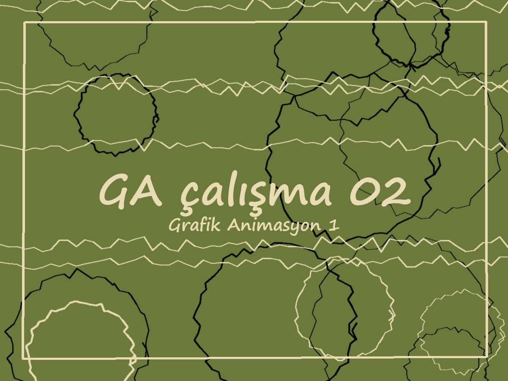
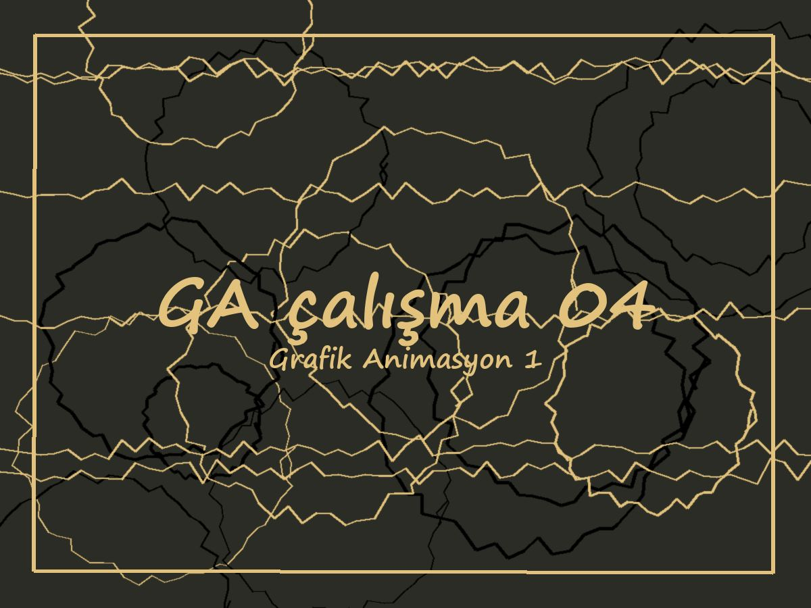

Web Geliştirme
Semantik HTML, temiz CSS ve modüler JavaScript ile hızlı açılan, bakımı kolay siteler kuruyorum.
- HTML5 & erişilebilirlik
- Modern CSS (grid, flex)
- Vanilla JS & API
merhaba, ben
Frontend geliştirici & Bilgisayar Mühendisliği öğrencisi
Kodla çizim yapıyorum: hızlı, erişilebilir ve kaydırdıkça canlanan arayüzler. İstanbul'dan, bir fincan kahve ve bolca karalamayla.
Bence iyi bir arayüz bir defter sayfası gibidir: sade, samimi ve biraz da karalama dolu. Kodu sadece çalışsın diye değil, hissettirsin diye yazıyorum. Piksel piksel düşünür, hareketle anlatır, telefonda da dev ekranda da aynı özeni gösteririm. Merak ederim, dener, bozarım ve yeniden çizerim.
Merhaba! Ben Ad; Bilgisayar Mühendisliği 2. sınıf öğrencisiyim. Gündüzleri algoritma ve veri yapılarıyla boğuşuyor, geceleri arayüzlere hareket katıyorum.
Tek satır kod yazmadan önce defterime karalarım: iyi bir arayüzün de iyi bir algoritma kadar özen istediğine inanırım. Bu dönem Grafik Animasyon dersinde zamanlamanın ve squash & stretch'in büyüsünü keşfettim.



Kampüs, şehir, doğa ve defter arası: beni en iyi anlatan fotoğraflardan bir avuç. Üstüne gel, öne çıksın; tıkla, galeride büyüsün.
Bir proje, staj ya da sadece kahve eşliğinde sohbet — ne olursa. Birlikte çizelim, birlikte kodlayalım.
genelde 1 gün içinde dönerim!